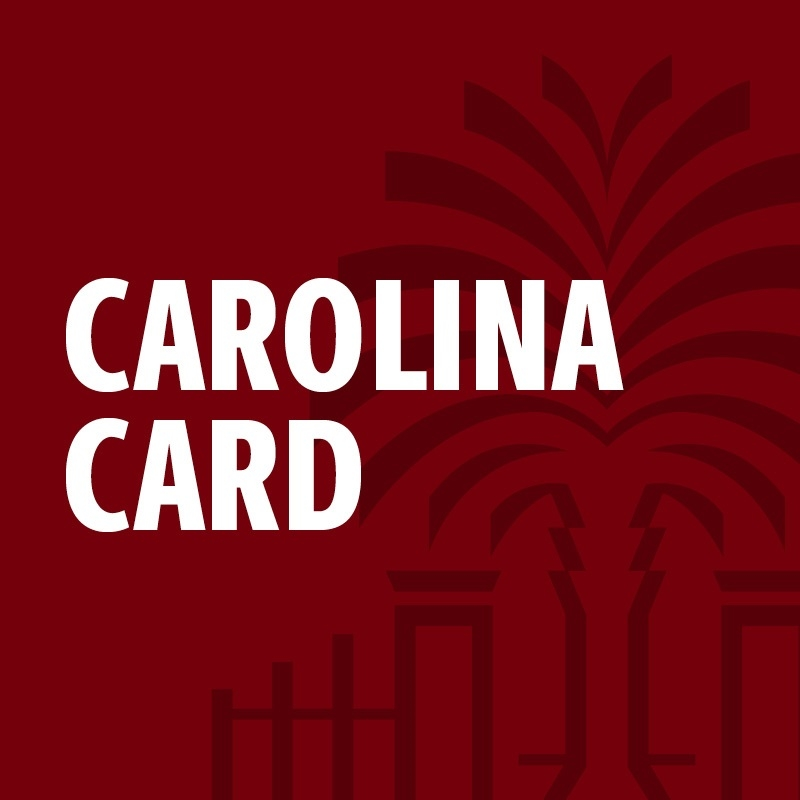

Top Skills
Systems Operations
Endpoint Management
Systems Analysis
Technical Support
A summary of my work experience, education, technical skills, relevant courses, and additional honors.
Carolina Gas Transmission (Berkshire Hathaway Energy) – Columbia, SC

University of South Carolina – Columbia, SC
Consolidated Pipe & Supply – Columbia, SC
Molinaroli College of Engineering and Computing
Integrated Information Technology, B.S.
ITEC 242 - Business Communications
Theory and processes in written business communications; composing effective business letters and reports.
ITEC 264 - Computer Applications in Business I
Survey of core skills and techniques for spreadsheet design and analysis of business problems.
ITEC 233 - Introduction to Computer Hardware and Software
Understanding of current computer hardware and software through computer building, repairing, and troubleshooting.
ITEC 265 - Introduction to Databases
Fundamentals of modern database design and applications.
ITEC 370 - Database Systems in Information Technology
Survey of techniques for working with enterprise-level database systems.
ITEC 444 - Introduction to Human Computer Interaction
Human computer interaction: human factors of interactive software, methods to develop and assess interfaces, interaction styles, and design considerations.
ITEC 447 - Management of Information Technology
Overview of current practices and trends in end-user technology and information system management.
ITEC 560 - Project Management Methods
Project management principles and standard practices, including software applications for project management.
ITEC 245 - Introduction to Networking
Understanding the essential concepts of computer networks, including standards, topologies, security, media, switching, routing, and more.
ITEC 293 - Cybersecurity Operations
Operations in Security Operations Centers (SOC). Securing information systems by monitoring, analyzing, detecting, and responding to security events.
ITEC 445 - Advanced Networking and Security
Advanced administration of client/server networks with major emphasis on network operating system software.
ITEC 104 - Program Design and Development
Fundamental algorithms and processes used in business information systems. Development and representation of programming logic. Introduction to implementation using a high-level programming language.
ITEC 352 - Software Design
Survey of core software development principles, application development from pseudocode and flow charting through coding process.
ITEC 362 - Introduction to Web Systems
Introduction to web based systems, including HTML, CSS, and JavaScript; working with Content Management systems (WordPress, Joomla); Accessibility, SEO, and web development best practices.
High School Diploma
Contributed over 20 hours of community service through local and school-based initiatives supporting Mission Lexington, Ronald McDonald House, Nancy K. Perry Children's Shelter, and the American Cancer Society. Participated in food and holiday drives, campus beautification projects, and Adopt-A-Highway cleanups. Supported Relay for Life by selling and decorating luminaries to honor cancer survivors and raise funds for research and patient support. Also promoted campus positivity by assembling mood boosters and writing appreciation cards for teachers, demonstrating leadership, compassion, and dedication to community service.
As a member of the National Honor Society, recognized by the National Association of Secondary School Principals (NASSP), I upheld the four pillars of scholarship, service, leadership, and character. Being part of NHS strengthened my commitment to academic excellence and inspired me to continue giving back to my community beyond high school through volunteering, donating to those in need, and offering help wherever it's needed.